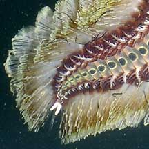
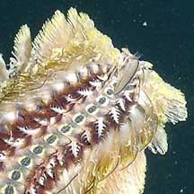
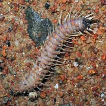
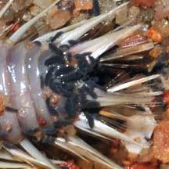
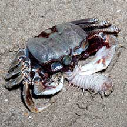

|
|
| worms text index | photo index |
|
worms > Phylum Annelida >
Class Polychaeta
|
| Beautiful
fireworm Chloeia sp. Family Amphinomidae updated Jun 2022 Where seen? This beautiful worm is sometimes seen on some of our shores. Once seen swimming actively at night, in groups of about about 6-8. It is also sometimes seen washed ashore in large numbers on Changi beach. Although it is among the most beautiful of our worms, its bristles can give a nasty and painful rash. Don't touch them. What is a fire worm? It is a segmented bristleworm belonging to the Family Amphinomidae, Class Polychaeta, Phylum Annelida. The polychaetes include bristleworms, and Phylum Annelida includes the more familiar earthworm. Many members of the Family Amphinomidae are known as fireworms because of the burning pain they produce when handled. Features: About 10cm long. The worm is flat and broad with lots of elaborate hairy bristles along its sides, and a pattern of triangles or spots along the centre of the upper side of the body. According to Leslie Harris, the one with the circles in the centre of the segments is Chloeia flava. The other with triangles in the centre of the segments remains unknown. It is said that these worms swarm at the surface during breeding season. Otherwise, they usually hide under stones and rocks. |
 Chloeia flava swimming Raffles Marina, Apr 04 |
 Tail. |
 Head. |
What does it eat? The worm is a predator, feeding on coral polyps, sponges, anemones, hydroids and ascidians. It lacks jaws but sucks out the juices of the prey. |
 Changi, May 08 |
 Washed ashore and attacked by springtails. |
 Dead one being eaten by a Ghost crab. Changi, Apr 09 |
| Beautiful fireworms on Singapore shores |
On wildsingapore
flickr
|
| Other sightings on Singapore shores |
| Acknowledgement With grateful thanks to Leslie H. Harris of the Natural History Museum of Los Angeles County for comments about these worms. and identification of Chloeia flava. Links
|